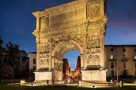
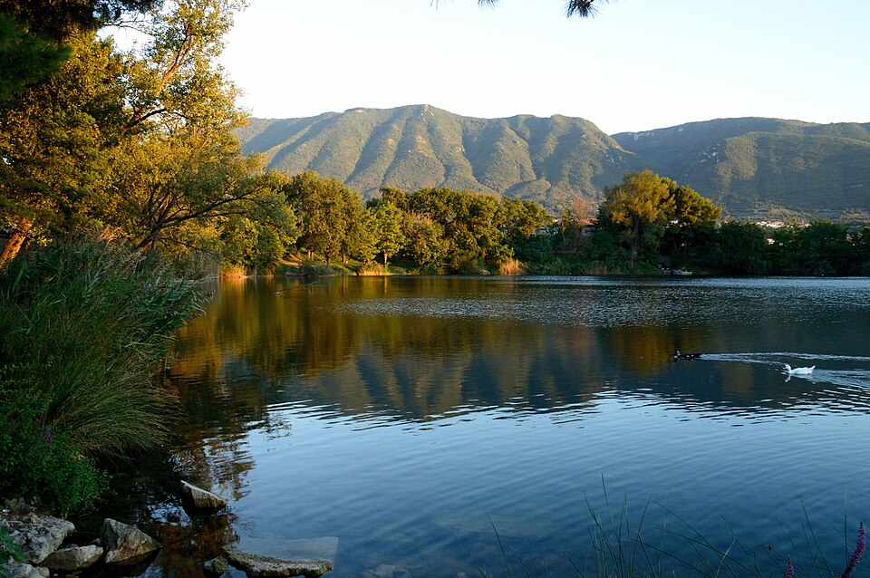

![[Immagine di Michele e Mabel]](./noi.jpg)
Benvenuti
"E quindi uscimmo a riveder le stelle."
Siamo felici di condividere con voi questo giorno speciale. Vi aspettiamo tra le colline del Sannio per festeggiare insieme l'inizio del nostro cammino, guidati dalla stessa luce che ha illuminato i nostri primi passi insieme.
Il Programma
La Cerimonia
Chiesa Madre del Santissimo Corpo di Cristo, Solopaca
Inizieremo la giornata nella Chiesa Madre di Solopaca, un luogo storico a cui siamo molto legati.
Visualizza MappaIl Ricevimento
Samnium Wedding Resort, Paolisi
Dopo la cerimonia ci sposteremo a Paolisi per il pranzo e i festeggiamenti, tra i sapori della nostra terra.
Visualizza MappaDove Alloggiare
Per chi viene da fuori e desidera pernottare in zona, consigliamo di cercare alloggio nella splendida cornice di Benevento.
• È il centro principale della zona con numerose strutture storiche.
• Offre un'ampia scelta gastronomica e percorsi culturali.
• Si trova a circa 25 minuti dalle location dell'evento.
L'Angolo del Turista

Benevento
Città millenaria con monumenti unici come l'Arco di Traiano e la Chiesa di Santa Sofia (Patrimonio Mondiale UNESCO). Il cuore della città è un labirinto di storia che merita di essere scoperto con calma.

Telese Terme
A pochi minuti da Solopaca, Telese incanta con il suo parco termale e il lago smeraldo. È possibile ammirare anche gli scavi dell'antica Telesia, testimonianza del passaggio dei Romani nel Sannio.
Per chi prolunga il soggiorno
Il Sannio è la porta della Campania. Se avete a disposizione qualche giorno extra, ecco alcune mete leggendarie a breve distanza:
Napoli
L'anima vibrante della regione, tra musei, vicoli storici e il lungomare ai piedi del Vesuvio.
Costiera
I panorami mozzafiato di Amalfi e Positano, gemme incastonate nel blu del Mediterraneo.
Pompei
Un'immersione senza tempo negli scavi archeologici più famosi e suggestivi del mondo.
RSVP
Fateci sapere se sarete con noi.
Vi preghiamo di confermare la vostra presenza entro il [Inserire Data Conferma].
Link al modulo di conferma